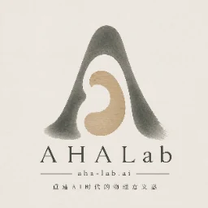

做一只自己的影人
先选轮廓，再画两处认得出的特征。确定头、身体、双臂、双腿和道具的连接位置，轻轻转一下，看看有没有挡住。
在画板中可以选七位起步影人，改颜色、画花纹、做镂空，拖动关节点。给影人起个名字，保存后送上舞台试演。换设备前先导出 JSON。
若要剪成纸偶，先试剪一片，检查镂空之间的纸桥。数字画板不检查实体连通性。安全剪刀与关节穿孔由教师按年龄安排。
打开角色画板 ↗
AHALab先选轮廓，再画两处认得出的特征。确定头、身体、双臂、双腿和道具的连接位置，轻轻转一下，看看有没有挡住。
在画板中可以选七位起步影人，改颜色、画花纹、做镂空，拖动关节点。给影人起个名字，保存后送上舞台试演。换设备前先导出 JSON。
若要剪成纸偶，先试剪一片，检查镂空之间的纸桥。数字画板不检查实体连通性。安全剪刀与关节穿孔由教师按年龄安排。
打开角色画板 ↗